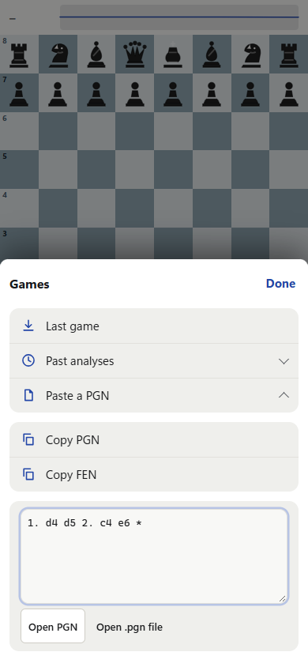
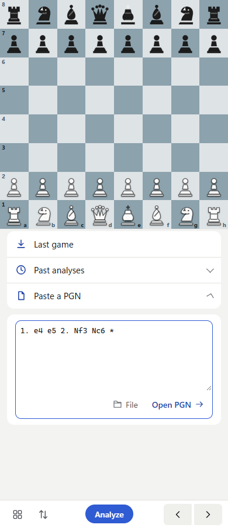
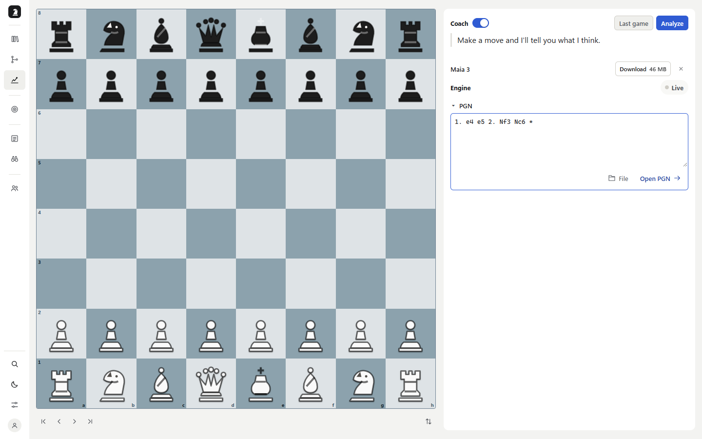
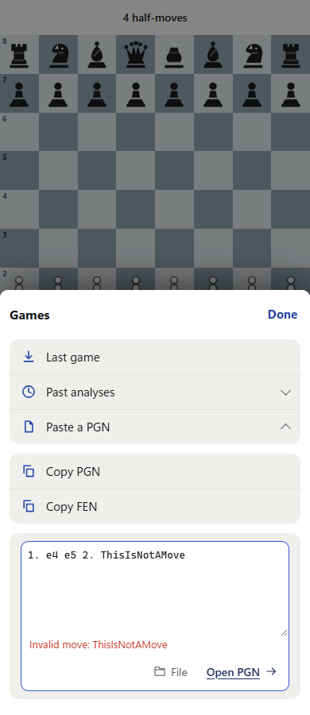
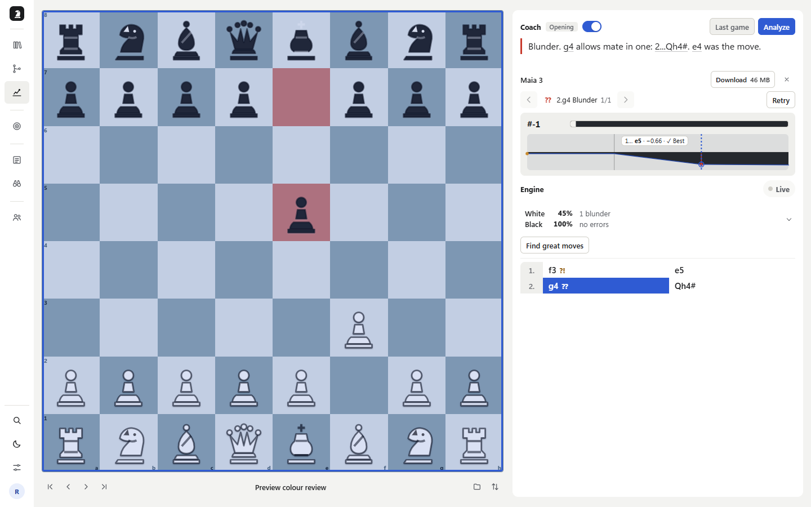
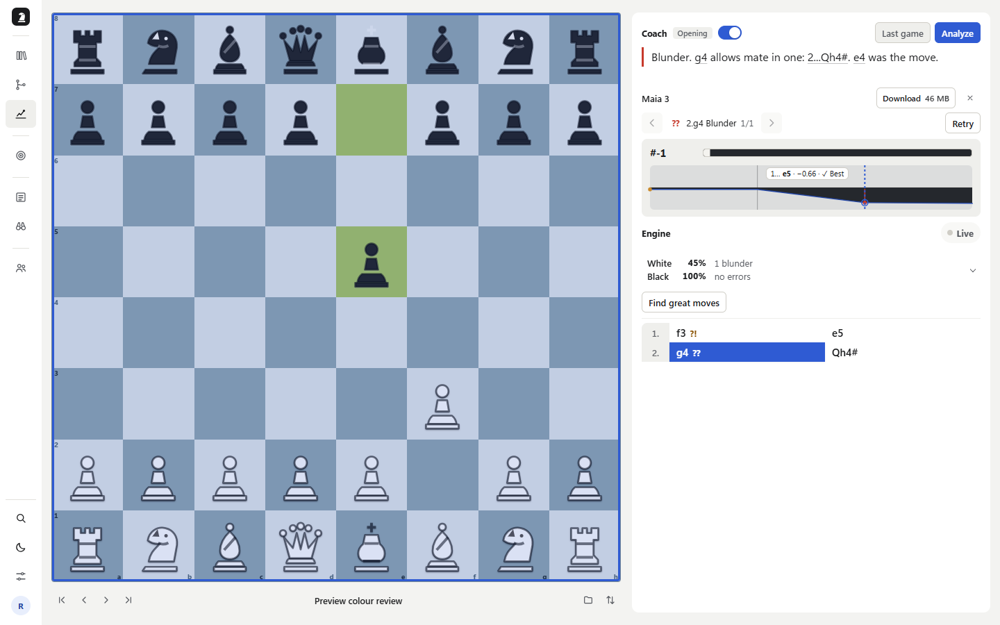
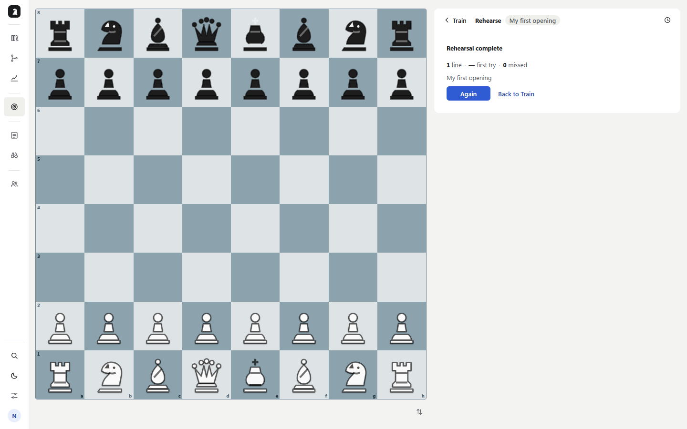
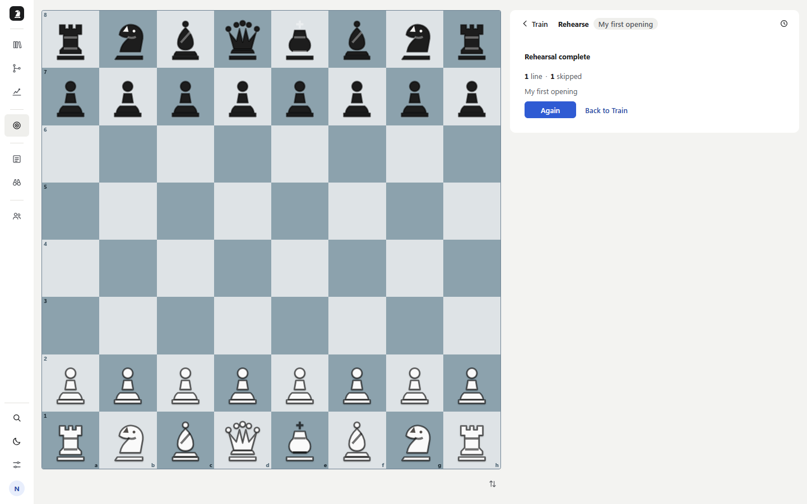
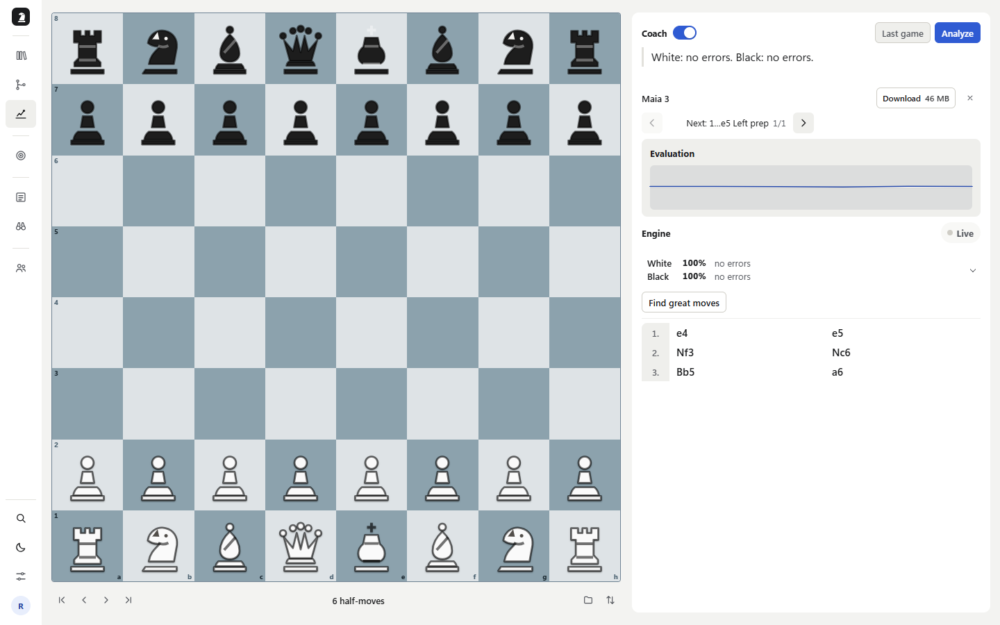
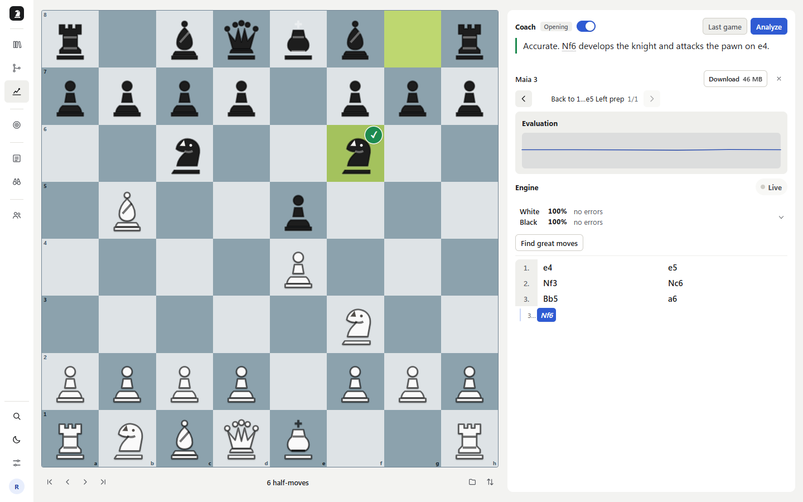

PrepForge 細節測試與前後對照
2026-10-27 · 本機實際 API、隔離測試資料庫 · 7 位零產品上下文 Luna · 全部使用無視窗、隔離瀏覽器
本輪完成四組修正：預覽走法底色、Rehearse 跳過統計與重試狀態、PGN 輸入框操作，以及分析完成時保留使用者新增的變化線。所有畫面均為實際瀏覽器截圖。
PGN：操作收進輸入框右下角
依使用者指定，移除額外一排實心／描邊按鈕，改為框內右下角的 File 與 Open PGN 文字、圖示。外觀無框，仍保有 44px 點擊高度與鍵盤操作。桌面 1440、平板 768、手機 390px 都實測可載入、無橫向溢出。
剛才的版本

新增載入功能後的中間版本；不是原始 main 畫面。依建議調整後

File、Open PGN 共用輸入框；整局評估仍由 Analyze 啟動。桌面畫面、錯誤修正流程


錯誤留在輸入框內，不遮住操作。修正後成功載入 d4 d5 c4 e6；錯誤隱藏，面板關閉。Preview：底色屬於正在預覽的那一步
我選中 g4??，滑到評估曲線上的 e5。原版棋盤已顯示 e5，但底色沿用 g4 的紅色；修正後使用 e5 的 Best 綠色。未評級的教練／引擎走法預覽採預設色，離開預覽還原原走法。背景重新評級也不會染錯預覽。
修改前

修改後

Rehearse：記錄跳過，不延續上一條的重試次數
我直接跳過唯一一條線，原版結算顯示「— first try · 0 missed」，沒有記錄 Skip。現在顯示「1 skipped」，並寫入本機訓練歷史。跳過後下一條從第一次作答開始；送出期間鎖定 Skip，避免快速連按重複跳線。拒絕或已離開的請求不會污染新會話。
修改前

修改後

分析完成：保留等待期間新增的變化線
我在真實 Stockfish 分析等待期間加入 3…Nf6。原版完成時用原始 PGN 重建走法樹，Nf6 消失且選中位置回到開局；現在只更新主線分析資料，保留分支及選中局面。此重現僅暫停真正的 classify-save 請求以穩定時序，未替換引擎或 API 結果。
修改前

修改後

Luna 實際操作範圍
| 任務／視窗 | 使用者旅程與審核結果 |
|---|
桌面 Analyze 圖表
1440×900 | 我貼上短局並完成評估，選 Nf3、打開引擎。Agent 只驗到走法列 hover，未完成圖表 hover；主代理補做了圖表分級、未分級預覽與離開還原。 |
手機棋譜編輯
390×844 | 我先選 e4，再點當前走法開啟選單；長註解可儲存，取消編輯保留原文。原先「手機無法開啟走法選單」為選取／工具操作誤判，已撤回。主代理補驗 c5 分支，重載後仍存在。 |
桌面 Train
1440×900 | 我下錯 e3、依次用提示，再下 e4。主代理重驗可正常結算，未採納「正確後卡在提示」的結論。Skip 未記錄及跨線重試狀態已修正。重載期間提示／嘗試狀態的完整恢復尚未驗完。 |
手機 Library
390×844 | 我搜尋、清空篩選、切換白黑方、打開重新命名再取消。未發現確認的功能故障。空名稱使用預設名稱，沒有改成強制輸入。檔案匯入及長名稱儲存未完成。 |
桌面 Settings
1440×900 | 我改深色、Walnut、Classic、關閉座標，切頁重載後仍保留；再還原設定。命令面板與帳號選單可用 Escape 關閉並還原焦點。未發現可重現缺陷。 |
手機 Analyze
390×844 | 我載入棋局、首尾導航、翻盤、開關 Games、複製 PGN/FEN。從貼上新 PGN 找到缺少提交入口；修正後獨立重驗有效替換、無效保留與重試成功。舊錯誤通知遮住操作列的後續問題改成框內錯誤，主代理再驗通過。 |
桌面 Analyze 變化線
1440×900 | 我加入 Nf6，切回 a6，等待分析完成後發現分支消失。主代理確認原因、修正並以前後真實 API 流程驗證。 |
競品與設計依據
Lichess 匯入棋局將匯入與請求電腦分析分開；本次 Open PGN 採同樣的功能區分。框內右下角、無框文字操作則直接依使用者本次設計要求。預覽評級沿用 PrepForge 既有走法色彩，未新增評級或新色盤。
ChessTempo 官方手冊將訓練結果與跳過／放棄的操作分開說明。本次保留本產品既有 Skip 語義，補上本來已有的 skipped 計數；不引入競品的評分懲罰。結算格式沿用現有 Due queue 的跳過顯示。
驗證與限制
- 單元測試：291 檔、3,114 項通過。
- 正式建置通過；ESLint 零錯誤，314 個既有警告。
- Analyze 七視窗 smoke 通過（真實瀏覽器 Stockfish，API fixture）；Train 視窗 smoke 通過（fixture）；變化線／反向導航／重載 smoke 通過。
- 真實本機 API：預覽前後、Skip 結算、等待分析新增分支前後、手機 PGN 有效／無效／修正重試，以及 1440／768／390px PGN 操作皆驗證。
- 使用 design-taste-frontend，沿用既有品牌方向；三視窗 inspector 以 no-title 豁免後零 FAIL／WARN。原因：這是既有棋盤工作區，沒有為本次局部功能更動新增大型頁面標題。原始檢查的唯一 FAIL 為缺少 h1。
- 部分 Luna 操作因 selector、登入限流或 runtime 重設而使用多個隔離 context；未將這些工具失敗當成產品缺陷，也不宣稱所有規劃旅程完成。
- 真實手機軟鍵盤、原生長按、完整多線訓練重載恢復、外部 Lichess／Teams／Scout 流程不在此次已通過範圍。無音效修改或聽感判斷。
來源：七份 Luna 第一人稱報告、主代理重現、目前原始碼與本輪測試。日期是審查日期，不是永久產品要求。